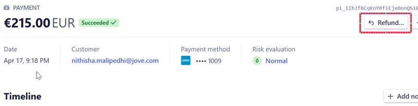
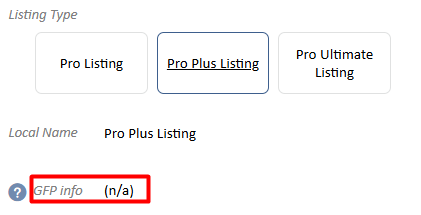
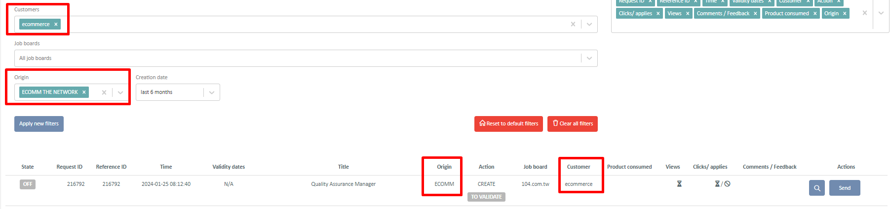
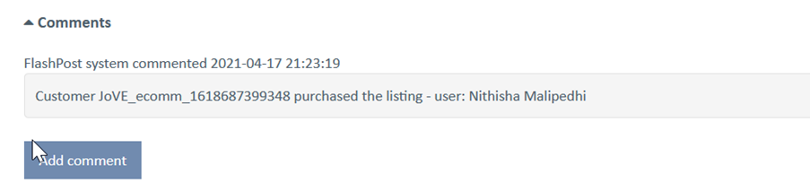
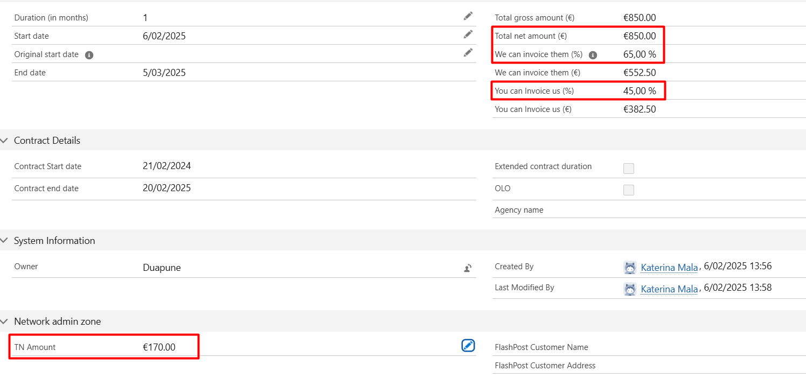
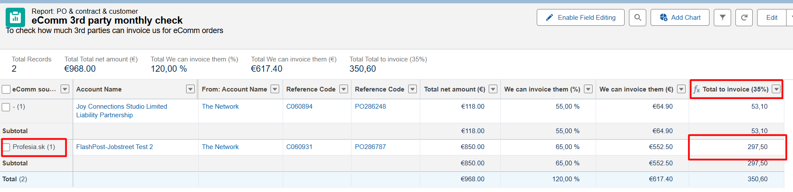
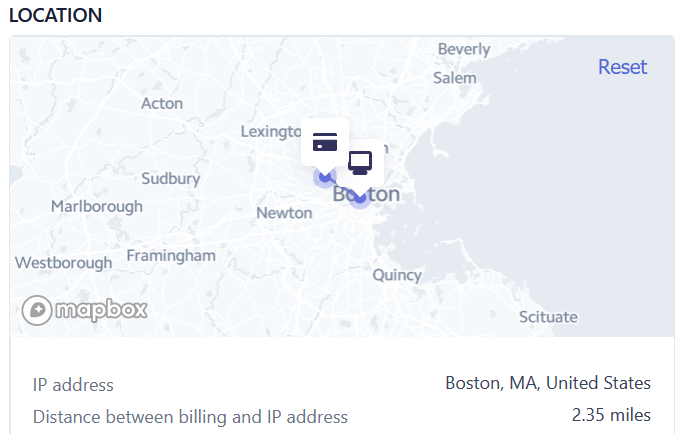

eCommerce - First Order
Leads process
When we receive a Slack notification about a new order, there are two options:
- Customer registered but did not finalize the purchase or the payment failed -> in that case, CS has to create a lead in SF and send it to the rightful partner (they should include info about the country the customer tried to post to)
- Customer registered and finalized his purchase -> in this case, a lead is created automatically in SF once the eComm listing is validated in FP to be sent (so the Create message is either in ACCEPTED status or is in CUSTOMER_SETUP and is waiting for delegation confirmation)
If the lead was won:
- In SF: the lead should be converted into account or new account to be created by the selling partner
- In FP: if a deal is signed by the selling partner and the customer will use FP, change the selling partner of the customer
CS process flow
- You will be notified in Slack in eComm channel
- Log into Stripe and check the payments for the customer in question (you can see both successes and rejections; in Slack, only successful payments will be displayed)
- People who have login: Julien, Daniel, Katrien, Lucija, Mila, and Kate (we should all have it activated in case of backing up)
- Login via Okta authenticator app
- Do a fraud check (click to see the procedure)
- If all good, continue with the next step
- If bad, do NOT proceed with the listing. Rather, you should
- Change the status of the listing by choosing the action “reject ecommerce listing” (this only changes the status, nothing else is triggered)
- Issue a refund in Stripe (open the payment and click on the refund button) 
- Finance doesn’t need to be informed since the invoice is not issued yet
- Disable the customer in FP, and expire the wallet by changing the dates
- Proceed with the job:
- First, go to the customer tab:
- The customer is created automatically with a timestamp (number), e.g. Customer_ecomm_1618687399348
- You can find it using the customer company name used for the order
- Rename it into Customer_ecomm
- The public name should be filled in without _ecomm
- Logo is created in FP in black but you can upload the logo from the customer’s website instead
- Type should be Ecommerce
- Posting method should be Recruiter Application
- The selling partner is The Network
- Add the parent customer ecommerce
- There is no Salesforce Account ID for eComm clients
- Channel is already created as email override and standard. It should NOT be delegated!
- Wallet is already created with the credit imported; the type is Ecommerce
- In SF, create the new customer:
- Selling partner: The Network
- Add a parent account: eComm
- Billing address is mentioned in the Slack message
- Add the country as SJNWW and create a SJNWW contract
- In the field "email sales person", put cs@the-network.com
- Once the contract header is created, edit the contract and add 'eComm source'!!! This is very important step as we will start to have eComm orders from 3rd parties and we need to have a way to distinguish them. You will find the information about where the order is coming from in the Slack notification. Simply choose from the drop-down options the correct source and save
- Create the Contract-Product - select either job listing standard/customized/other as per product purchased (you can always check in the PT which type is linked to standard or customized GFP and if it says n/a, you should use the type 'other') 
- Add the SF contract ID into the FP wallet (CRM Contract ID field)
- In Monitoring, you can find the job itself:
- The customer name is ecommerce (once the listing is sent this will change into the acutal customer name)
- All ecomm listings have status "To Validate"
- You can search the posting by selecting the origin "ECOMM (THE NETWORK)" (this is a filter you need to add to the search, it does not display automatically), or by searching the customer name 'Ecommerce' 
- The listing has a comment with the customer reference and user name 
- The listing content should be already checked during the Fraud check process so you can click on the action 'Post e-commerce listing' --> the job will get associated to the customer and an email will be sent to the receiving partner
- The customer will receive an order confirmation at that moment
- In Users enable the user who was created automatically during the order. They will receive logins to follow up on their job posting.
- Change the permission (role) from Ecommerce into Key Recruiter and add the customer
- Back in SF, create a PO and validate it
- In case that the eComm order came from a 3rd party (not from The Network), you will have to change The Network split accordingly
- The Network should keep 20% (not the usual 10%) for any 3rd party eComm order. To calculate this, you should take the Total Net value and calculate 20% out of it. Then, simply edit the OUT PO and input the calculated value into the 'TN Amount' field on the bottom left of the page
- To ensure your calculation is correct, verify that the 'We can invoice them' value of the OUT PO changed from 55% to 65%. The 'You can invoice us' value should stay 45% 
- Once the OUT PO is issued, send it to the receiving partner via an email. Mention this is ecomm and should be processed with shorter SLA
- In case the receiving partner refuses the posting or needs additional information, get in touch with the user (customer)
- The user can update or delete the job once they have access (an email with the action will be sent)
Finance process flow
- An invoice should be created by our accountant for every successfuly processes eComm order for any order via The Network source
- Once the invoice is issued, send it to the customer
- Once a month, run this report to check how much 3rd parties can invoice us for eComm orders coming from their website
- Check correctly that the split on 'We can invoice them' is indeed 65% (meaning that the CS team correctly amended this on the OUT PO) and then, send an email to the 3rd party informing them how much they can invoice using the 'Total to invoce (35%)' column (per 3rd party, i.e., to Professia, to Pracuj, etc.)
- The 'Total to invoice (35%) is a calculated field that calculates the total net of the PO x 0,35 = the amount the 3rd party can claim for this order 
How to do a fraud check?
- Stripe check should be already very sufficient. Julien is taking care of its configuration: there are automated verifications performed and configurable in Slack, which Julien can configure as an admin of the Stripe account.
- Still, once logged in Stripe, open the payment and check 'Payments & Review and do a risk evaluation - you need to open the payment to check the details (it has the risk rate):
- We might need to review for fraud payments in between 65 and 74+ from list of restricted countries; all those in payments should be ok, but still do a little check
- Check the card origin and the country origin if they match (i.e. the company address and the origin of the card)
- Potentially you can check if the countries and the IP are the same (but careful as we have Polish API and we are in BE). For example: 
- In addition, with every request received, you should:
- Check the customer website (does it exist, does it look real, if you see contact emails, is the domain the same as the ecomm user contact email, etc.)
- Check the job description content; no illegal things like having to pay to apply, etc. (for this, you need to go to monitoring and find the job; only available in JSON format for now)
- Check that the job description more or less matches with the company profile (while checking their website)
- Give a further 5 min check when the request is coming from Eastern Europe, Ukraine, Russia, China, African countries – we will not block it per default but it would be worthy to maybe cross check the responsible person on LinkedIn (via their email or phone number, check with contact details on the company website if that person really works for the company, etc.)
- If you come across a fraud, you should add it on ‘blacklisted customer’ list (this will have to be still created and will most probably be shared with DE and UK; Julien is going to check for this). And of course do not process the order, but do a refund. If fraud spot late or referred by the receiving partner, cancel what you created in FP and SF as well!
What are our Stripe rules?
- We block everything with a risk of 75 or higher
- Automatic blocks from Stripe
- We block when we noticed the email is disposable one (according to Stripes' rules) = Single use email addresses
- We block if IP is anonymous (with the previous e-commerce - OLO - it was also blocked if the IP address was created recently => sign it is a not a real company but created for money laundering)
- We block if users are trying to use the same card more than once per day
- If CVC - credit card number - is missing